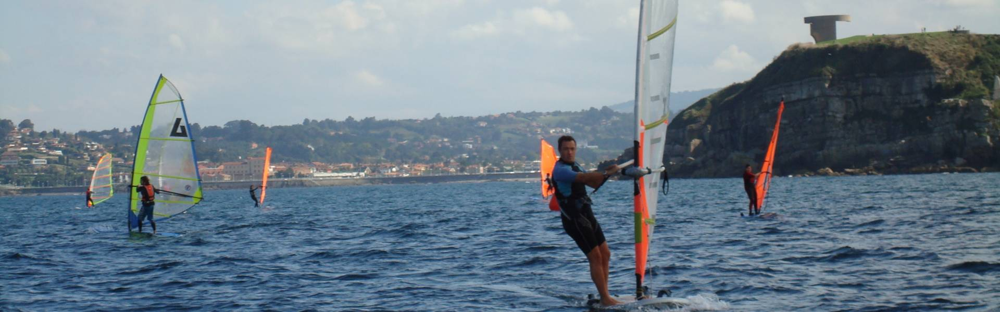
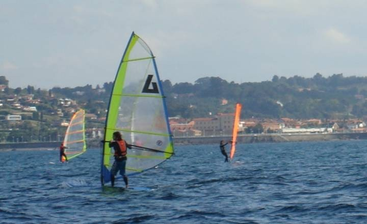

- Los Bufones de Pría, espectáculo natural.
- Cudillero, un anfiteatro sobre el mar.
- Playa de Gulpiyuri, playa de interior.
- Cabo Peñas, el punto más al norte.
- La Costa de los Dinosaurios y el Museo Jurásico de Asturias.
- La senda costera.
- Las ostras del Eo.
- Lastres y Llanes, escenarios de cine.
- Playas para la práctica del surf.
- Camposantos con vistas únicas: Luarca y Niembro.
Geografía
Desde el punto de vista geológico, la rasa litoral da continuidad a todo el conjunto de la Costa Verde. Se trata de una planicie más o menos ancha que se extiende desde el borde del mar, o acantilado, hasta las primeras laderas de las montañas. Su génesis es la de una antigua costa marina, batida por las olas que hoy en día ha quedado emergida a varios metros sobre el nivel del mar; incluso más de 100 metros. La costa oriental es una macizo cárstico masivo, por lo que aquí encontramos formaciones de costas muy vigorosas.
El nombre turístico hace alusión al color verde de los campos durante todo el año, que se prolonga hasta las playas. Se trata de una costa escarpada, con acantilados, pero también con extensos arenales y calas. El Cabo de Peñas, el más septentrional de la Comunidad, divide la costa oriental y occidental de Asturias. Este cabo está declarado paisaje protegido debido a su flora y fauna propia y sus acantilados, que en algunos puntos superan los cien metros de altura.
Algunas de las playas más conocidas son las de Rodiles, en Villaviciosa; la de La Isla, en Colunga; la de Torimbia, en Llanes; la de Arnao, en Castrillón; o la de San Lorenzo, en Gijón. Destaca por su singularidad la Playa de Gulpiyuri, en Llanes, declarada monumento natural en , además de formar parte del Paisaje Protegido de la Costa Oriental de Asturias. Se trata de una playa cerrada, sin acceso abierto al mar, el cual se adentra en la playa por una pequeña cueva submarina por debajo del acantilado.
No te pierdas...
Actividades Náuticas
Las poblaciones costeras asturianas preservan su tradición marinera. Las más singulares y atractivas son: Cudillero, Gijón, Llanes, Ribadesella, Luarca, Luanco y Candás.
Por su carácter salvaje y la altura de sus olas, la Costa Verde es un destino importante para los que practican el surf y el windsurf.
Abierta al mar Cantábrico, disfrutarás de soberbios paisajes costeros creados por las rasas asturianas, paisajes idílicos para contemplar desde por ejemplo un kayak de mar, y sobre todo magníficas olas que conforman algunos de los spots surfistas más afamados a nivel nacional e internacional.
Pero también es posible realizar actividades más relajadas como el paddle surf, la vela de crucero y vela ligera, etc. o disfrutar practicando buceo o pesca submarina y mientras admirar unos fondos marinos que te van a sorprender.
En bañador o con el neopreno, el mar en Asturias se disfruta en cualquier época del año.
Atrévete con alguna de las olas en el Occidente de Asturias y disfruta de sus crestas, rompientes, picos, etc.
El paddle surf es una original forma de descubrir el Oriente asturiano.

